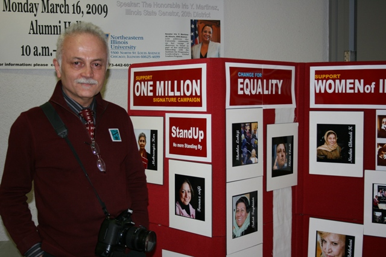

|
|

گفتگو با یک کمپینی در شیکاگو
همه آرزوهای من!
فریبا داوودی مهاجر
يكشنبه2 فروردین 1388
تغییر برای برابری - برای یک سخنرانی در کنفرانسی به دانشگاه نورث وسترن ایلی نویز شیکاگو رفته بودم. میزی که فرم هاو عکسهای فعالان کمپین یک میلیون امضا بر روی آن گذاشته شده بود مرا در جا میخکوبم کرد. جالبتر برای من این بود که یک مرد میان سال، پشت آن میز برای کمپین تغییر برای برابری، امضاء جمع آوری می کرد.

امیر نورمندی در گفتگو با من بی انقطاع اشک می ریخت. او عکاسی ساکن شیکاگو است. وقتی از انگیزه هایش برای ایجاد کمپین یک میلیون امضاء در این شهر آن هم به تنهایی صحبت می کند، صورتش از اشک خیس می شود. در جواب سوال من که چرا اینجا هستی؟ می گوید:
 به خاطر خواهرهایم. خواهرانی که هر دو در ایران هستند. هردوتحت ظلم و ستمی که پایانی ندارد. به دلیل اینکه همواره یک همسرویا یک زن، در قالب یک ازدواج، توقعی که از او می رود این است که باید یک مادر فداکار ویا همسر فداکار، یک زوج مطیع و فرمانبردارباشد، اما بدون حق و اعتباری برای زندگی! من به عنوان یک برادر، یک فرزند ویکی از اعضاء این جامعه، تلاشی برای توقف این روش نکردم. شعور و دانشم به این حد نرسید که عشقی که به خواهرانم داشتم موجب کمک به آنها شود. به اینکه آنها ازدواج کنند، خانواده تشکیل دهند، بدون آنکه برده باشند. من برای برده نبودن خواهرانم تلاشی نکردم. خواهر کوچک من یکبار مورد ضرب و جرح قرار گرفت. من از طریق مادرم، از مادر همسرش سوال کردم که چرا می گذارد که این اتفاق بیافتد؟ مادر همسر خواهرم پاسخ داده بود مگر ما کتک نخوردیم؟ ماهم کتک خوردیم.
به خاطر خواهرهایم. خواهرانی که هر دو در ایران هستند. هردوتحت ظلم و ستمی که پایانی ندارد. به دلیل اینکه همواره یک همسرویا یک زن، در قالب یک ازدواج، توقعی که از او می رود این است که باید یک مادر فداکار ویا همسر فداکار، یک زوج مطیع و فرمانبردارباشد، اما بدون حق و اعتباری برای زندگی! من به عنوان یک برادر، یک فرزند ویکی از اعضاء این جامعه، تلاشی برای توقف این روش نکردم. شعور و دانشم به این حد نرسید که عشقی که به خواهرانم داشتم موجب کمک به آنها شود. به اینکه آنها ازدواج کنند، خانواده تشکیل دهند، بدون آنکه برده باشند. من برای برده نبودن خواهرانم تلاشی نکردم. خواهر کوچک من یکبار مورد ضرب و جرح قرار گرفت. من از طریق مادرم، از مادر همسرش سوال کردم که چرا می گذارد که این اتفاق بیافتد؟ مادر همسر خواهرم پاسخ داده بود مگر ما کتک نخوردیم؟ ماهم کتک خوردیم.
حتی تازگی ها شنیدم زن دیگری در زندگی خواهر کوچکم راه یافته است. اما عشق به بچه ها و عشق به زندگی، آنها را وادار به ادامه زندگی می کند.
از او سوال میکنم که فکر نمی کنی برای طلاق نگرفتن این فقط یک بهانه است؟
امیر می گوید: من سعی کردم طلاق بگیرند. تمام تلاشم را کردم. ولی آنها نگران بچه ها و بخصوص دخترانشان هستند. واین بدبختی زن ایرانی است. بدبختی این است که خواهر بزرگترم به خواهر کوچکترم می گوید که نباید طلاق بگیرد. در حالیکه خودش در عذاب زندگی می کندو تحت ستم است. او می گوید اینها قوانین الهی است ونباید از آنها تخطی کرد.
خوب شاید همسرانشان مذهبی هستند؟
 نه مذهبی نما هستند! من معتقد نیستم که مذهبی ها می توانند با همسرانشان این گونه رفتار کنند. کجای مذهب می گوید که همسرتان را بزنید؟ کجای مذهب می گوید مهربان نباشید؟ کجای مذهب به خشونت توصیه می کند؟ اینها مذهبی نماها هستند. مشکل ما مذهب نیست. مشکل ما تظاهر به مذهب است.
نه مذهبی نما هستند! من معتقد نیستم که مذهبی ها می توانند با همسرانشان این گونه رفتار کنند. کجای مذهب می گوید که همسرتان را بزنید؟ کجای مذهب می گوید مهربان نباشید؟ کجای مذهب به خشونت توصیه می کند؟ اینها مذهبی نماها هستند. مشکل ما مذهب نیست. مشکل ما تظاهر به مذهب است.
تاکنون چند امضاء جمع کرده ای؟
 فکر می کنم بالای 3000 امضاء. هر وقت نمایشگاه عکس می گذاشتم پنل و میز کمپین هم به راه بود. ومن امضاء جمع می کردم. اما نمیدانم که آیا امضاء هایی که برای کمپین پست کرده ام به دستشان رسیده است یا نه؟ بعد ها از ترسم امضاء ها را اسکن می کردم و بعد می فرستادم.
فکر می کنم بالای 3000 امضاء. هر وقت نمایشگاه عکس می گذاشتم پنل و میز کمپین هم به راه بود. ومن امضاء جمع می کردم. اما نمیدانم که آیا امضاء هایی که برای کمپین پست کرده ام به دستشان رسیده است یا نه؟ بعد ها از ترسم امضاء ها را اسکن می کردم و بعد می فرستادم.
برخورد مردم در خارج از کشور با شما چگونه بود؟
 کاملا متفاوت! بعضی ها اجازه نمی دهند در مراسمشان امضاء جمع کنم. یک شب، شب شعر فارسی بود که مدیر برنامه اش از اختصاص دادن یک میز به کمپین امتناع کرد و گفت: ما سیاسی نیستیم! اما درست همان موقع که او جواب رد داد با بچه هایی که مطالعات زنان داشتند و مراسمی داشتند صحبت کردم و آنها اجازه دادند که امضاء جمع کنم.
کاملا متفاوت! بعضی ها اجازه نمی دهند در مراسمشان امضاء جمع کنم. یک شب، شب شعر فارسی بود که مدیر برنامه اش از اختصاص دادن یک میز به کمپین امتناع کرد و گفت: ما سیاسی نیستیم! اما درست همان موقع که او جواب رد داد با بچه هایی که مطالعات زنان داشتند و مراسمی داشتند صحبت کردم و آنها اجازه دادند که امضاء جمع کنم.
کمی از مادرتان بگویید. آیا مادرشما یکی از انگیزه هایتان برای فعالیت امروز تان نیست؟
 راستش را بخواهید چرا! من با مادرم زیاد خوب نبودم. وقتی پدرم فوت کرد مادرم جوان بود. و از ما آزرده شد . مادر من یکی از شواهد دردناک ظلم نسبت به زن است. آن مصیبت ها برای من یک درس بود. و اینکه رفتار مردان با زنان چه قدر ظالمانه است؟ و بعد هم ما با او خوب تا نکردیم. سه برادر بودیم و دو خواهر. ما علاقه مند نبودیم که او دوباره ازدواج کند. درحالیکه بسیار جوان بود. او حتی یک نامزد داشت و ما آن مرد را برای ازدواج با مادرم تحویل نمی گرفتیم. محل او نمی گذاشتیم. محل مادرم هم نمی گذاشتیم. مادرم ازدواج نکرد. من دراین ممانعت سهیم بودم . من اورا با این عمل خودم محکوم به مرگ کردم. فکر کردم. چون شوهرش فوت کرده بود، خودش هم می بایست تارک دنیا شود.
راستش را بخواهید چرا! من با مادرم زیاد خوب نبودم. وقتی پدرم فوت کرد مادرم جوان بود. و از ما آزرده شد . مادر من یکی از شواهد دردناک ظلم نسبت به زن است. آن مصیبت ها برای من یک درس بود. و اینکه رفتار مردان با زنان چه قدر ظالمانه است؟ و بعد هم ما با او خوب تا نکردیم. سه برادر بودیم و دو خواهر. ما علاقه مند نبودیم که او دوباره ازدواج کند. درحالیکه بسیار جوان بود. او حتی یک نامزد داشت و ما آن مرد را برای ازدواج با مادرم تحویل نمی گرفتیم. محل او نمی گذاشتیم. محل مادرم هم نمی گذاشتیم. مادرم ازدواج نکرد. من دراین ممانعت سهیم بودم . من اورا با این عمل خودم محکوم به مرگ کردم. فکر کردم. چون شوهرش فوت کرده بود، خودش هم می بایست تارک دنیا شود.
آیا توانستی از خواهرهایت امضاء بگیری؟
 احتمالا همسرانشان آنها را از من برحذر می کنند فکر نمی کنم امضاء کرده باشند.
احتمالا همسرانشان آنها را از من برحذر می کنند فکر نمی کنم امضاء کرده باشند.
خوب آیا تا بحال با همسرت با خشونت رفتارکرده ای؟
 نه! ابدا! می دانی، حتی همسر اول من طلاق گرفت و رفت. من پسرم را خودم بزرگ کردم. نمی گویم خشونت زبانی هیچگاه نداشتم اما خشنونت جسمی خیر! حتی با فرزندم! من برای پسرم حتی تفنگ و چاقوی اسباب بازی هم نمی خریدم تا خشونت را تمرین نکند.
نه! ابدا! می دانی، حتی همسر اول من طلاق گرفت و رفت. من پسرم را خودم بزرگ کردم. نمی گویم خشونت زبانی هیچگاه نداشتم اما خشنونت جسمی خیر! حتی با فرزندم! من برای پسرم حتی تفنگ و چاقوی اسباب بازی هم نمی خریدم تا خشونت را تمرین نکند.
چگونه به سوی کمپین جذب شدی؟
 ا بتدا مقاله های نوشین احمدی را خواندم. بعد خودجوشی کمپین مرا به خود جلب کرد. من هم همین گونه کار میکنم. خودجوش! بعدها وقتی عکسهای عاشوری را دیدم فکر کردم چرا من کاری نکنم؟ وتصمیم گرفتم که شروع کنم. مهرانگیز کار که به شیکاگو آمد. کتابش در باره خشونت را امضاء کرد و به من داد. آن کتاب هم نهیبی دیگر به من بود. و عاملی شد برای ادامه کار. بعد ها درباره زنا ن و حجاب عکاسی کردم. تا نمایشگاهی در این باره برگزار کنم.
ا بتدا مقاله های نوشین احمدی را خواندم. بعد خودجوشی کمپین مرا به خود جلب کرد. من هم همین گونه کار میکنم. خودجوش! بعدها وقتی عکسهای عاشوری را دیدم فکر کردم چرا من کاری نکنم؟ وتصمیم گرفتم که شروع کنم. مهرانگیز کار که به شیکاگو آمد. کتابش در باره خشونت را امضاء کرد و به من داد. آن کتاب هم نهیبی دیگر به من بود. و عاملی شد برای ادامه کار. بعد ها درباره زنا ن و حجاب عکاسی کردم. تا نمایشگاهی در این باره برگزار کنم.
- یکی از آرزوهایت را برای ما بگو.
 می خواهم دخترهای خواهرم دریک جامعه انسانی زندگی کنند. و خواهر زاده هایم بدانند که چگونه باید با همسرو مادر وخواهر خود رفتار کنند. این هم آرزوی من است.
می خواهم دخترهای خواهرم دریک جامعه انسانی زندگی کنند. و خواهر زاده هایم بدانند که چگونه باید با همسرو مادر وخواهر خود رفتار کنند. این هم آرزوی من است.